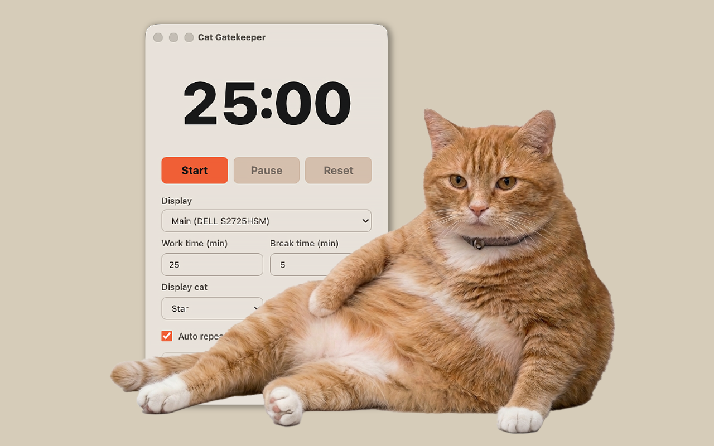
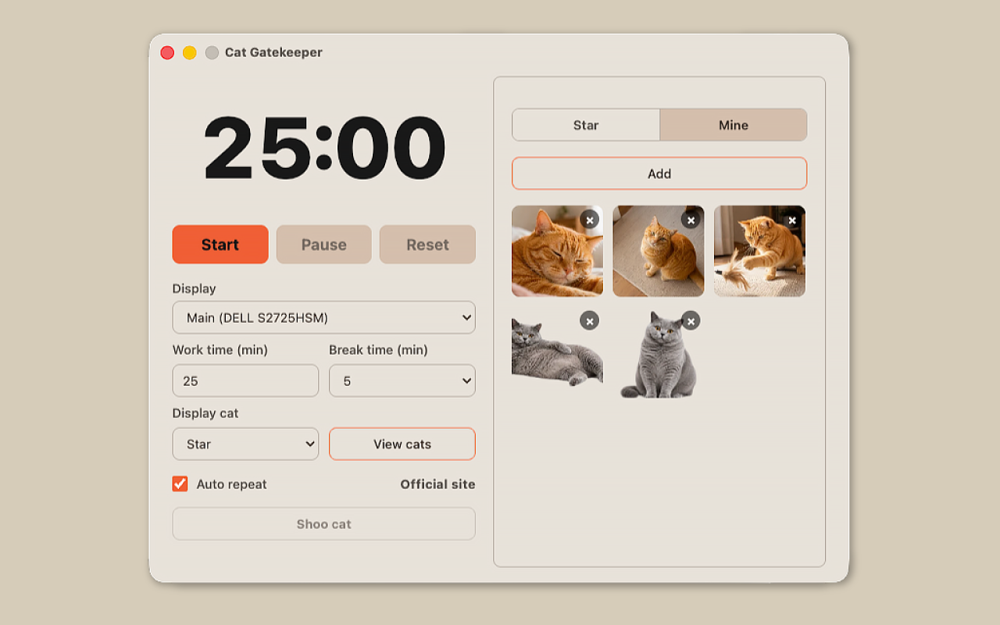

August 18, 2026: Ver. 1.3.11 (Mac & Win)
• Added three new star cats.
• Added a "UFO" effect.
Official Desktop App
Set a work timer
The cat takes over your screen when it is time for a break
30,000+ total downloads

WHAT'S NEW
• Added three new star cats.
• Added a "UFO" effect.
• Added a third star cat.
• Added a "Rainbow" motion for "Mine" cats.
• Improved star cat previews.
• "World" cats you haven't met yet now appear first.
• Fixed display and data-saving issues and improved stability.
• Added support for Intel-based Macs.
• Added a new motion, "Space Cat."
• Added a button to play and preview motions.
• Newly added "World" cats now show up sooner.
• Added a new star cat.
• "World" cats have arrived! Cats from users around the world now come tell you it's break time.
• Added menu bar tray mode. You can close the window and keep using the app from the menu bar.
• You can now add your favorite photos.
• You can now remove the background from added photos.
• Motion features have been added.
• The menu screen display and behavior have been improved.
• Fixed an issue where the Dock icon could become unstable during breaks on Mac.
• Fixed an issue where the menu might not appear after ending a paused countdown on Mac.
Cat Gatekeeper Desktop is now available for both Windows and Mac.
The official Cat Gatekeeper website is now available.
FEATURES
When it is time for a break, cats appear with charming motion to firmly stop your work. Add your favorite photos or remove backgrounds to create your ideal interruption scene.
When it is time to rest, a cat appears on your desktop.

Register your favorite photo as My Cat.

Remove the background from your photo so it blends naturally into the screen.
Add your favorite effect to a photo and show it during breaks.
New Cats


Which one?
HOW TO
Choose your work and break time.
Keep the timer on screen,
or tuck it into the menu bar or system tray.
When time is up,
the cat appears with a break reminder.
PRIVACY
Q&A
No. The browser extension helps prevent overuse of selected websites, while the desktop app is a timer that encourages breaks from computer work as a whole.
No. It does not track your browsing history, app usage, keystrokes, or screen contents. It only follows the work and break times you set.
It works on macOS and Windows. The macOS version supports both Apple silicon and Intel-based Macs.
Yes. You can change both the time before the cat appears and the break time from the app menu.
Set your work time and break time, then start the countdown. When the countdown reaches 0 and break time begins, the cat will appear on your screen.
The basic features work offline. An internet connection is required to download World Cats and other additional content, view update information, or open the official website.
Photos added to My Cat are processed and stored on your device and are not sent anywhere.
Yes. Turn on Remove Background when adding a photo to process it on your device. Photos with simple backgrounds work best.
Yes. You can add movement and visual effects to photos in My Cat, and change them later from the My Cat list.
Yes. Turn on the tray option in Settings to use the app from the menu bar on macOS or the system tray on Windows after closing the window.
Yes. You can dismiss it from the app menu, or by pressing the dismiss button that appears in the bottom-right corner of the screen when the cat appears.
The cats in the videos are ideal cats created with the help of AI and carefully adjusted one by one to become the ultimate lovable distractions. Please treat them kindly as little gatekeepers for your desk.
You are very welcome to include screenshots or screen recordings in posts introducing Cat Gatekeeper or sharing your impressions. However, please do not extract, reuse, or redistribute image or video assets included in the app.
Automatic updates may be turned off, or the store may still be rolling out the latest version. Open the Cat Gatekeeper page in your app store and check whether an update is available.
Yes. More cats are planned for future updates.
FOLLOW
Updates and behind-the-scenes on X!
Follow @konekone2026